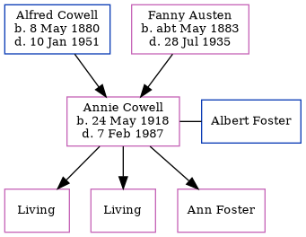

Annie Foster (née Cowell) 1918 - 1987
[ Home ] | [ Calendar ] | [ Surnames Index ] | [ Census Index ] | [ Family History ]The child of Alfred Cowell (a transport driver) and Fanny Austen, Annie Cowell, the first cousin once-removed on the mother's side of Nigel Horne, was born in Minster, Thanet, Kent, England on May 24, 19181,2,3,4 and married Albert Foster (with whom she had 3 children: Marjorie E, Edith N and Ann, along with 2 surviving children) in Thanet, Kent, England around Feb 19355.
During her life, she was living at Durlock Farm Cottages, Minster in Thanet on Jun 19, 19211; and at 3 Paramour Grange Cottages, Ash, Kent on Sep 29, 1939 when she was living with her brother-in-law, "Edmund Atkins.
She died on Feb 7, 1987 at Medway Hospital, Chatham, Kent3.
Parents
- Alfred John was born on May 8, 1880
- Fanny was born c. May 1883
Citations
- 1921 Census Of England & Wales - Findmypast (was age 3 and the daughter of the head of the household)
- England & Wales births 1837-2006 - Findmypast
- England & Wales deaths 1837-2007 - Findmypast
- England & Wales, Birth Index: 1916-2005 Online publication - Provo, UT, USA: The Generations Network, Inc., 2008.Original data - General Register Office. England and Wales Civil Registration Indexes. London, England: General Register Office. © Crown copyright. Published by permission of the Cont
- England & Wales, Marriage Index: 1916-2005 Online publication - Provo, UT, USA: The Generations Network, Inc., 2009.Original data - General Register Office. England and Wales Civil Registration Indexes. London, England: General Register Office. © Crown copyright. Published by permission of the Cont
Media
Chatham News, 13 Feb 1987

England & Wales marriages 1837-2008 - BMD/M/1935/1/AZ/000166/022
England & Wales births 1837-2006 - BMD/B/1918/2/AZ/000255/066
England & Wales deaths 1837-2007 - BMD/D/1987/2/76098360
1939 Register Transcription - TNA-R39-1819-1819C-007-20
Family Tree
Generated by ged2site. Last updated on Jun 11, 2024